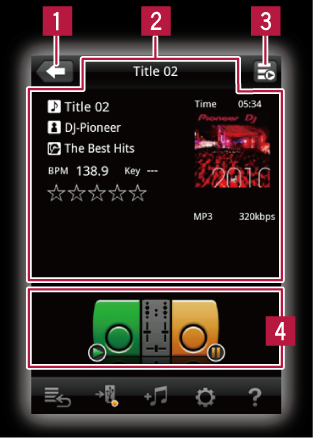

Панели rekordbox
Панель подключения (для XDJ)
Применимые модели: XDJ-AERO/XDJ-RX

Применимые модели: XDJ-AERO/XDJ-RX
 Используется для возврата на уровень выше (панель просмотра).
Используется для возврата на уровень выше (панель просмотра). Здесь отображается информация по музыкальному файлу.
Здесь отображается информация по музыкальному файлу. Отображает состояние воспроизведения текущего подключенного DJ проигрывателя.
Отображает состояние воспроизведения текущего подключенного DJ проигрывателя. При прикосновении к иконке деки музыкальный файл загружается на выбранную деку.
При прикосновении к иконке деки музыкальный файл загружается на выбранную деку.